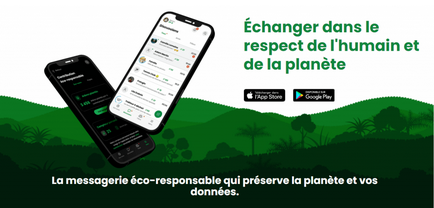
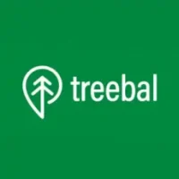

Client case study
Treebal chooses Greenspector to assess the footprint of its committed messaging service
Treebal is an instant messaging service that contributes to reforestation. The team wanted to validate the results of its ecodesign approach implemented from project launch, and identify improvement areas.
Greenspector supports us in assessing the energy impact related to Treebal usage to identify improvement areas and improve continuously.
Date: 04/02/2022


Challenge
Ecodesign continuously, on measured foundations
Digital service ecodesign is an ongoing process. It requires reliable measurements on the most used journeys, in test conditions close to real usage.
These measurements help identify concrete functional, technical, ergonomic, graphic and editorial improvements, while objectifying results.
Solution implemented
Measurement, recommendations and impact projection
- Smartphone measurement campaign with journey automation, iterative runs and detailed metric analysis (energy, data, performance).
- Targeted advice and recommendations to continue the ecodesign trajectory.
- Carbon impact projection via the Greenspector assessment model.
Assess the footprint of your mobile applications and websites, and obtain certification based on concrete measurements.
Results
Bronze certification and identified improvement areas
- Treebal obtains the Greenspector Digital Frugality Certificate at Bronze level.
- The team's ecodesign efforts are objectified and confirmed by measurement.
The ecodesign approach was established from project kick-off to remain consistent with our vision and digital sobriety objectives. It is now a structural challenge to integrate from the start of every project.
Expert opinion
Feedback from Antoine Jaury, Greenspector consultant
The App Scan audit assessed the current quality of the Android Treebal application, identified the most consuming journeys and proposed business, UX/UI and technical improvements.
A key point identified concerns media sharing usage (GIFs, photos): targeted actions on image sizes, journey design and technical implementation can deliver significant impact for limited effort.
Performance and consumption at application launch were also analysed to improve this critical first-impression step.
Your turn
Assess the impact of your digital service
Want to measure the environmental impact of your application or obtain the Greenspector Digital Frugality certification?
Author
Elouan Gree